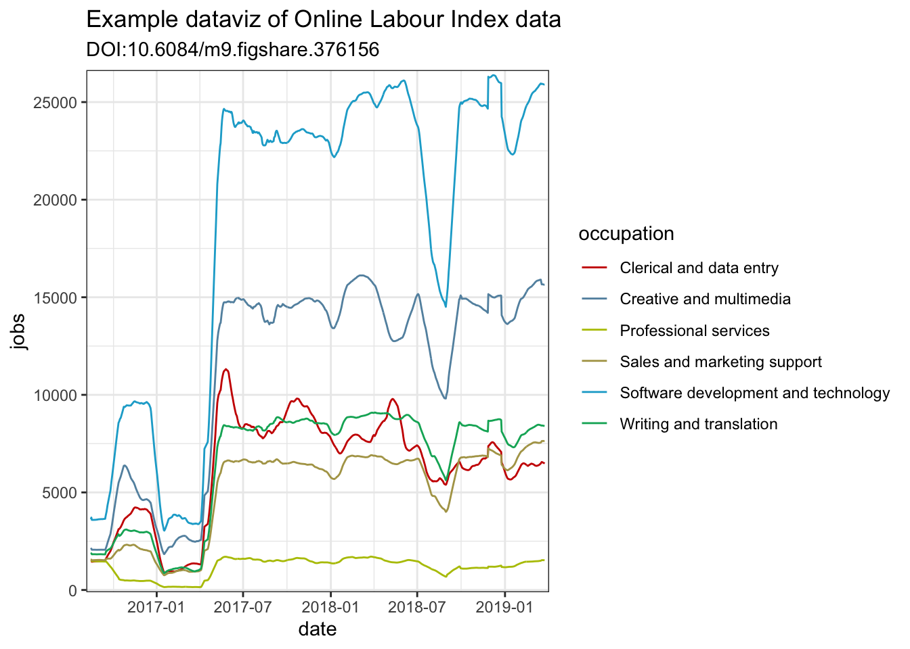

By Martin John Hadley | March 25, 2019
Shiny Modules are an “advanced” feature of Shiny apps that developers can use to reduce code duplication, simplify complex inter-relating controls, allow UI elements to be compartmentalised into R packages… and generally be a Shiny magician.
Much of the stuff written about modules gets lost in the weeds. We’re not going to do that here. We’re going to make the Shiny app I’ve embedded below (as an iframe), both with and without modules.
This app is slightly complicated, but deliberately so. I want to give you a real world example of using Shiny modules.
We’ll go through the following steps:
Data import and wrangling
server.R skeleton
gg_ma_timeseries()
How to follow along
To follow along you are advised to create a new RStudio Project and create the files detailed below in turn.
What’s the app?
The app allows the viewer to interact with data from the Online Labour Index. This is a project undertaken by the University of Oxford’s Internet Institute to study the online labour market, and ultimately to provide an economic indicator for the gig economy. The data is deposited on Figshare, which means anyone can access (and importantly, cite) the data with the following DOI: 10.6084/m9.figshare.3761562.
Data import, wrangling and stuff
Let’s completely ignore the details of accessing and wrangling the data. This is a tutorial on Shiny modules.
Create yourself a new script file called data-processing.R and insert this code. Please note that when this script is run it will download a dataset that in early 2019 is 37Mb in size, this will double every 3 years1.
## This code should be inserted into your data-processing.R script
fs_deposit_id <- 3761562
deposit_details <- fs_details(fs_deposit_id)
deposit_details <- unlist(deposit_details$files)
deposit_details <-
data.frame(split(deposit_details, names(deposit_details)), stringsAsFactors = F)
imported_country_group_data <- deposit_details %>%
filter(str_detect(name, "bcountrydata_")) %>%
pull(download_url) %>%
read_csv() %>%
mutate(timestamp = as_date(timestamp)) %>%
rename(date = timestamp)
gigs_by_country_group <- imported_country_group_data %>%
group_by(date, country_group) %>%
summarise(jobs = sum(count)) %>%
ungroup()
gigs_by_occupation <- imported_country_group_data %>%
group_by(date, occupation) %>%
summarise(count = sum(count)) %>%
rename(jobs = count) %>%
ungroup()Please note, we don’t run this code yet. It’s going to be loaded in our server.R file.
server.R skeleton
Here’s the skeleton for our server.R file, go ahead and create this on your machine:
## this is how your server.R file should look
library("shiny")
library("tidyverse")
library("rfigshare")
library("lubridate")
library("xts")
library("ggsci")
source("data-processing.R", local = TRUE)
function(input, output, session){
}Some things to note about our file:
We’ve loaded all of the packages needed for the whole app, not just the data wrangling.
We’ve used
source()to run the data wrangling script when the Shiny app loadsOur shiny server function contains three arguments. Many Shiny tutorials ommit the
sessionargument, but it’s integral for Shiny modules to work correctly.
We’re about to run our script file, but first register for a Figshare.com account so you can use the rfigshare package. Now run this script.
gg_ma_timeseries
Let’s assume for a minute that the dataviz we’re creating here is important enough that we might want to use it in other places than just this Shiny app. The easiest way to support this is by placing the script for the dataviz in its own file.
Create a new file called gg_ma_timeseries.R and add the following code, we’ll walk through the potentially mysterious enquo part of the functions in two minutes.
## this is how your gg_ma_timeseries.R file should look
gg_ma_timeseries <- function(.data, date, value, category) {
date <- enquo(date)
value <- enquo(value)
category <- enquo(category)
n_colours <- .data %>%
pull(!!category) %>%
unique() %>%
length()
colours_from_startrek <- colorRampPalette(pal_startrek(palette = c("uniform"))(7))(n_colours)
.data %>%
ggplot(aes(
x = !!date,
y = !!value,
color = !!category
)) +
geom_line() +
theme_bw() +
scale_color_manual(values = colours_from_startrek) +
scale_x_date(expand = c(0.01, 0.01)) +
scale_y_continuous(expand = c(0.01, 0)) +
labs(
title = "Example dataviz of Online Labour Index data",
subtitle = "DOI:10.6084/m9.figshare.376156")
}
ma_job_count <- function(.data, date, value, category, window_width){
date <- enquo(date)
value <- enquo(value)
category <- enquo(category)
window_width <- as.numeric(window_width)
.data %>%
group_by(!!category) %>%
arrange(!!date) %>%
mutate(!!value := rollmean(!!value,
k = window_width,
na.pad = TRUE,
align = "right"
)) %>%
filter(!is.na(!!value)) %>%
ungroup()
}gg_ma_timeseries()is the function which creates ourggplot2timeseries datavizma_job_count()is a little utility function for smoothing the data withxts::rollmean().
Let’s load this file in our server.R script, so the file now has all of the code in it from before. Run this entire script.
## this is how your server.R file should look
library("shiny")
library("tidyverse")
library("rfigshare")
library("lubridate")
library("xts")
library("ggsci")
source("data-processing.R", local = TRUE)
source("gg_ma_timeseries.R", local = TRUE)
function(input, output, session){
}I want to prove to you that this works. Create a new script file scratch-pad.R where we can experiment and play. Add the following code, and then run the script.
## this is how your scratch-pad.R file should look
gigs_by_occupation %>%
ma_job_count(date, jobs, occupation, 28) %>%
gg_ma_timeseries(date, jobs, occupation)
Notice how the column names jobs, occupation and date have been given to gg_ma_timeseries without quotation marks? This is exactly the same as how we use functions from dplyr, e.g. iris %>% mutate(species = toupper(species)). These are what we call naked column names.
That’s why the functions use enquo() internally, it’s implementing non-standard evaluation with tidyeval. However, there’s zero need to understand this now (if you don’t want to). This is a Shiny module tutorial, so let’s move on to the ui.R file.
ui.R skeleton
Here’s the skeleton for our ui.R file, go ahead and create this on your machine:
## this is how your ui.R file should look
library("shiny")
library("shinycustomloader")
shinyServer(navbarPage(
"Shiny Modules",
tabPanel(
"By occupation",
fluidPage()
),
tabPanel(
"By country",
fluidPage()
)
))Shiny app without modules
A complete copy of this Shiny app that doesn’t use modules is available on Github here: https://github.com/martinjhnhadley/training_shiny-module/tree/master/gg_ma_timeseries/shiny-without-modules.
There’s a tremendous amount of duplication in the ui.R file to get the radioButtons() to look how I want them to. We need to use Shiny modules to simplify this, which we’ll do in the section below.
## DO NOT COPY THIS CODE.
## This is how the ui.R file looks without using modules.
library("shiny")
library("shinycustomloader")
shinyServer(navbarPage(
"Shiny without Modules",
tabPanel(
"By occupation",
fluidPage(fluidRow(column(
radioButtons(
"by_occupation_landing_rollmean_k",
label = "",
choices = list(
"Show daily value" = 1,
"Show 28-day moving average" = 28
),
selected = 28,
inline = TRUE
),
width = 12
)),
withLoader(plotOutput("gg_gigs_by_occupation")),
type = "html", loader = "dnaspin"
)
),
tabPanel(
"By country",
fluidPage(fluidRow(column(
radioButtons(
"by_country_group_landing_rollmean_k",
label = "",
choices = list(
"Show daily value" = 1,
"Show 28-day moving average" = 28
),
selected = 28,
inline = TRUE
),
width = 12
)),
withLoader(plotOutput("gg_gigs_by_country_group")),
type = "html", loader = "dnaspin"
)
)
))The server.R file is fairly tidy because we’ve already abstracted a lot of the app into functions:
## DO NOT COPY THIS CODE.
## This is how the server.R file looks without using modules.
library("shiny")
library("tidyverse")
library("rfigshare")
library("lubridate")
library("xts")
library("ggsci")
source("data-processing.R", local = TRUE)
source("gg_ma_timeseries.R", local = TRUE)
function(input, output, session) {
output$gg_gigs_by_occupation <- renderPlot({
gigs_by_occupation %>%
ma_job_count(date, jobs, occupation, input$by_occupation_landing_rollmean_k) %>%
gg_ma_timeseries(date, jobs, occupation)
})
output$gg_gigs_by_country_group <- renderPlot({
gigs_by_country_group %>%
ma_job_count(date, jobs, country_group, input$by_country_group_landing_rollmean_k) %>%
gg_ma_timeseries(date, jobs, country_group)
})
}Introducing the Shiny Module
The Shiny Module is composed of two components:
gg_ma_timeseries_input()creates an instance of our controls.gg_ma_timeseries_output()creates an instance of the chart, which is dependent on a set of controls (specified in the server.R file).
It’s crucial that we place the code for these elements of the module in the correct place:
Rules for modules
This is one of the things left out of the other Shiny module tutorials I’ve read. Most tutorials deal with a toy example and don’t split the code into distinct ui.R and server.R files. Let’s establish some hard and fast rules about modules:
Place your module code in a subfolder called
/modules.Code for inputs (controls) must be sourced in the
ui.Rfile.Code for outputs (charts) must be sourced in the
server.Rfile.
Namespaces with NS
Remember our server.R function?
server <- function(input, output, session){
}Inside of our modules we need to manipulate values from both the input and output objects. In programming speak, we need to be careful about namespaces. In Shiny, this means we need to use the NS() function to guarantee we’re refering to the values we think we’re refering to. Let’s create the control for our modules, in a new script file: /modules/client-side_gg-ma-timeseries.R.
## This is how your /modules/client-side_gg-ma-timeseries.R file should look
gg_ma_timeseries_input <- function(id) {
ns <- NS(id)
tagList(
"This entire tab is a shiny module, including; this text, the radio buttons and the chart.",
fluidRow(column(
radioButtons(
ns("landing_rollmean_k"),
label = "",
choices = list(
"Show daily value" = 1,
"Show 28-day moving average" = 28
),
selected = 28,
inline = TRUE
),
width = 12
))
)
}Things to take away from the gg_ma_timeseries_input() function:
ns <- NS(id)ensures we’re refering to values from the serverinputobjectns("landing_rollmean_k")translates toinput$landing_rollmean_kIf returning multiple ui elements they must be contained within
tagList()… but it’s a great idea to usetagList()by default, it will prevent mishaps.
That’s our control. We need to create our output function that will display the chart rendered by the server, which we’ll call gg_ma_timeseries_output(). It takes a while to download and display the data in our chart, so it’s a good idea to use the excellent [shinycustomloader] package to show an animated “loading” GIF to the user. Please update your /modules/client-side_gg-ma-timeseries.R file so it looks like this:
## This is how your /modules/client-side_gg-ma-timeseries.R file should look
library("shinycustomloader")
gg_ma_timeseries_input <- function(id) {
ns <- NS(id)
tagList(
"This entire tab is a shiny module, including; this text, the radio buttons and the chart.",
fluidRow(column(
radioButtons(
ns("landing_rollmean_k"),
label = "",
choices = list(
"Show daily value" = 1,
"Show 28-day moving average" = 28
),
selected = 28,
inline = TRUE
),
width = 12
))
)
}
gg_ma_timeseries_output <- function(id) {
ns <- NS(id)
withLoader(plotOutput(ns("ma_plot")), type = "html", loader = "dnaspin")
}Our output function is more complex than our input, because ns("ma_plot") refers to an instace of output$ma_plot from the Shiny module, which we haven’t created yet
The trick to how NS() works inside of gg_ma_timeseries_output() is more complicated than our input function, and is explained in the section below. However, let’s
## This is how your ui.R file should look
library("shiny")
source("modules/client-side_gg-ma-timeseries.R", local = TRUE)
shinyServer(navbarPage(
"Shiny Modules",
tabPanel(
"By occupation",
fluidPage(
gg_ma_timeseries_input("occupation_controls"),
gg_ma_timeseries_output("occupation_chart")
)
),
tabPanel(
"By country",
fluidPage(
gg_ma_timeseries_input("by_country_controls"),
gg_ma_timeseries_output("by_country_chart")
)
)
))We’re going to be extracting
ns <- NS(id)ensures we’rens("ma_plot")
Things they don’t tell you
Load the ui in the ui.R file
Delete the scratch-pad.R file
- I was interested in how important file size warnings are in tutorials, I was surprised that most folks wanted a warning for files bigger than 10Mb
↩Imagine you're following an R tutorial that includes
— Martin John Hadley (@martinjhnhadley) March 25, 2019
read_csv("http://online_csv";)
How large would that csv need to be before you'd want a warning written into the tutorial?